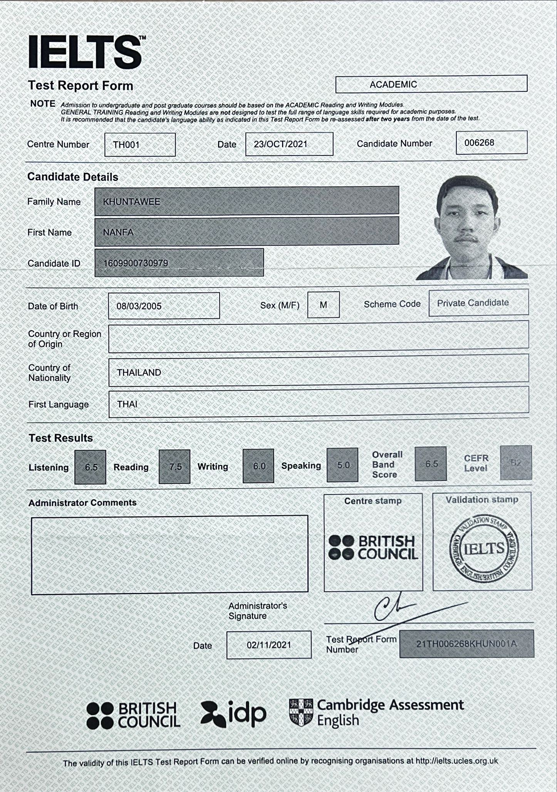

The 10th ASEAN +3 Teacher Workshop for the Gifted in science: Final Presentation “Energy in fruits” 2563
Certificates
โครงการส่งเสริมโอลิมปิกวิชาการและพัฒนามาตรฐานวิทยาศาสตร์ และคนิตศาสตร์ศึกษา (สอวน.) ในสาขา คอมพิวเตอร์ ค่าย 1 ปีการศึกษา 2562
โครงการส่งเสริมโอลิมปิกวิชาการและพัฒนามาตรฐานวิทยาศาสตร์ และคนิตศาสตร์ศึกษา (สอวน.) ในสาขา คอมพิวเตอร์ ค่าย 2 ปีการศึกษา 2562
โครงการส่งเสริมโอลิมปิกวิชาการและพัฒนามาตรฐานวิทยาศาสตร์ และคนิตศาสตร์ศึกษา (สอวน.) ในสาขา คอมพิวเตอร์ ค่าย 1 และ 2 ปีการศึกษา 2563
รางวัลเหรัยญทองแดง การแข่งขัน The 17th Thailand Olympiad in Informatics (TOI17)
โครงการส่งเสริมโอลิมปิกวิชาการและพัฒนามาตรฐานวิทยาศาสตร์ และคนิตศาสตร์ศึกษา (สอวน.) ในสาขา คอมพิวเตอร์ ค่าย 1 ปีการศึกษา 2564
โครงการส่งเสริมโอลิมปิกวิชาการและพัฒนามาตรฐานวิทยาศาสตร์ และคนิตศาสตร์ศึกษา (สอวน.) ในสาขา คอมพิวเตอร์ ค่าย 2 ปีการศึกษา 2564

รางวัลเข้าร่วม การแข่งขัน The 18th Thailand Olympiad in Informatics (TOI18)
เป็นพี่เลี้ยงในการสอน เขียนโปรแกรมให้กับน้องๆในค่าย สอวน. ค่าย 1 สาขาคอมพิวเตอร์ ณ โรงเรียนเฉลิมขวัญสตรี ประจำปีการศึกษา 2565

IELTS BAND 6.5
สัมมนาออนไลน์ปั้นเด็กวิทย์สู่นักวิจัย-นวัตกร New Zealand STEM Webinar Series ร่วมกับ มหาวิทยาลัยโอทาโก ประเทศนิวซีแลนด์ ปีการศึกษา 2564
ฝึกการใช้เครื่องมือห้อง STEM Lab ประจำปีการศึกษา 2564
โครงการยกระดับทักษะโค้ดดิ้งสู่การสร้างสรรค์โครงงานนวัตกรรมอัจฉริยะ CODEKATHON ระดับภูมิภาค ประจำปีการศึกษา 2565
รางวัลเหรียญทองในการแข่งขันประกวดโครงงาน The 2nd PCSHS Science Symposium 2022 ประเภทการนำเสนอแบบโปสเตอร์
เดินขบวนถือธงชาติ การเดินสวนสนาม ในงาน ครบรอบ 100 ปีวันคล้ายวันสถาปนายุวกาชาด ในวันที่ 16 มิถุนายน พ.ศ.2565
ปฏิบัติหน้าที่สภานักเรียน ด้สนงานโสตทัศนูปกรณ์ ประจำปีการศึกษา 2564

วิทยากรโครงการพี่สอนน้องเพื่อส่งเสริมโอลิมปิกวิชาการ สอวน. สาขาคอมพิวเตอร์ ประจำปีการศึกษา 2565
ผู้นำกิจกรรมสัปดาห์วิทยาศาสตร์และเทคโนโลยี ฐาน คอมพิวเตอร์ "Computer Dungeon" ประจำปีการศึกษา 2565
ผ่านการทดสอบวัดระดับภาษาเยอรมัน GOETHE-ZERTIFIKAT A1: FIT IN DEUTSCH 1 ปีการศึกษา 2564
show more